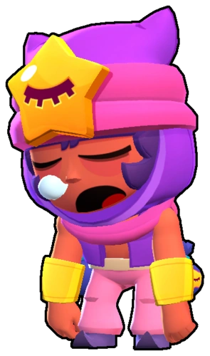

¿Quién es 8-Bit?
En las contadas ocasiones en que Sandy despierta de su profundo sueño, suele ayudar a su hermana Tara en la tienda. Aunque no aguanta mucho tiempo en pie.../b>
Sandy es un Brawler Legendario dormilón que tiene una conexión especial con la arena, su ataque son piedritas que acribillan a los enemigos y su súper es una tormenta que hace a los aliados y a el invisibles para los enemigos, le gusta dormir despierto.
|  |
NIVEL DE FUERZA 11 |
Sus gadgets
PASTILLAS PARA DORMIR: Sandy se queda dormido durante 1.5 segundos y recupera su salud por completo. |
DULCES SUEÑOS: El siguiente ataque de Sandy pone a los enemigos a dormir por 1 segundo. Pero despertarán si se les ataca. |
Sus habilidades estelares
 |
ARENA SEPULTADORA: La tormenta de arena ahora daña a los enemigos que estén dentro de ella con 216 de daño por segundo. |
 |
MINERALES CURATIVOS: La tormenta de arena ahora cura a Sandy y sus aliados por 380 puntos por segundo. |
Su hipercarga
VIENTOS VELOCES1: La velocidad de movimiento de Sandy y sus aliados aumenta un 20% mientras estén dentro de la Tormenta de Arena. Además, silencia a los enemigos durante 0.5 segundos cuando golpea. |
 Braian Arancibia
Braian Arancibia Aya El Baarar
Aya El Baarar